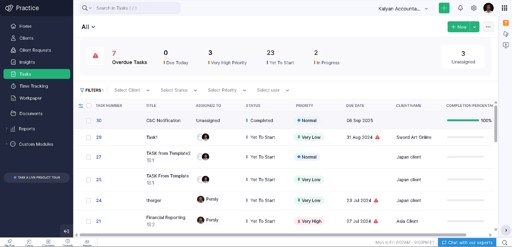
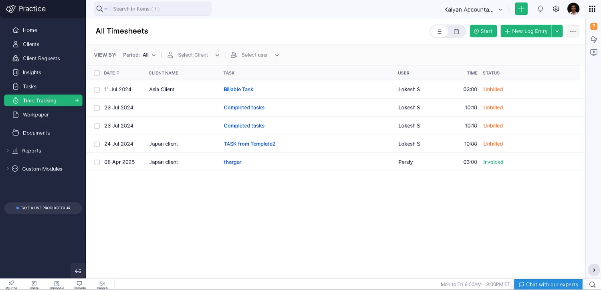
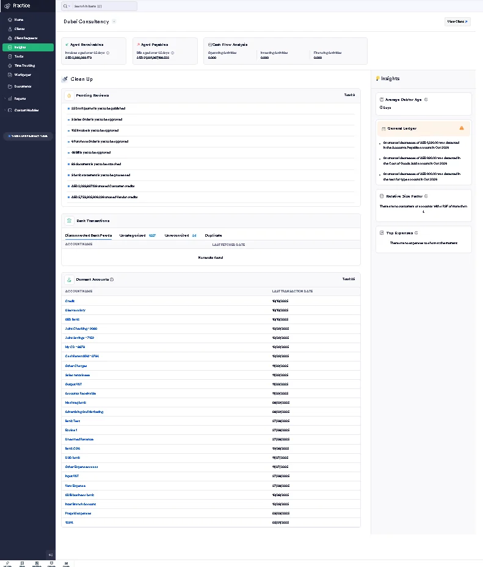
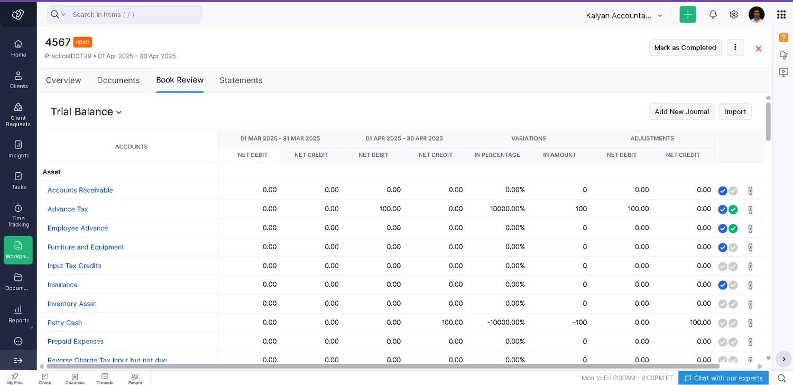
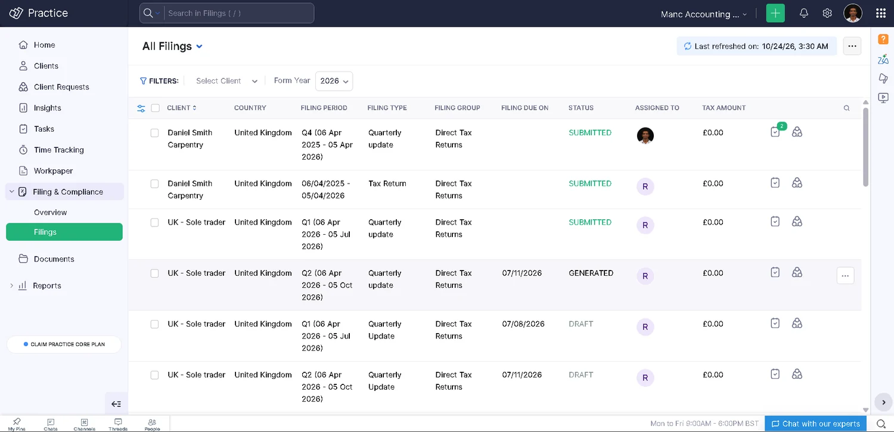

WorkJan 2023 – present
Practice modules
Features I built or own on the Zoho Practice platform, written in Java with JAX-RS and REST APIs on MySQL.
- Role
- Practice-side owner
- Stack
- Java · JAX-RS · REST · MySQL
- Repo
- Private, internal Zoho work
Private repo
More projects
screens
swipe or use the arrows




timeline
- Jan 2023Joined the Practice teamStarted as an intern, then converted to full time.
- NowStill buildingOwning modules and handling feature requests.
the modules
click a partTask Reminders
I own this module.
- Built the multi-assignee feature and auto number
- Looked after other teams' requirements
- Code review
Timesheets · with Billing
Practice-side ownership.
- Supported for Zoho Practice on top of the existing timesheet module
- Developed as an all-out Practice feature
- Took care of issues and feature requests
Insights Builder
Built from scratch, and I own its enhancements.
- A new feature, started as Practice only
- Took care of feature requests
- The framework was later reused for other apps
Workpaper
Built from scratch as a Practice-only feature.
- Added anomaly detection
- Added duplicate transaction finding within the workpaper period
Filing and Compliance · HMRC Agent Authorization
Supported using Insights Builder.
- A directed release towards the UK meant writing an integration with HMRC for agent filing
More projects
See everything I have built and shipped.